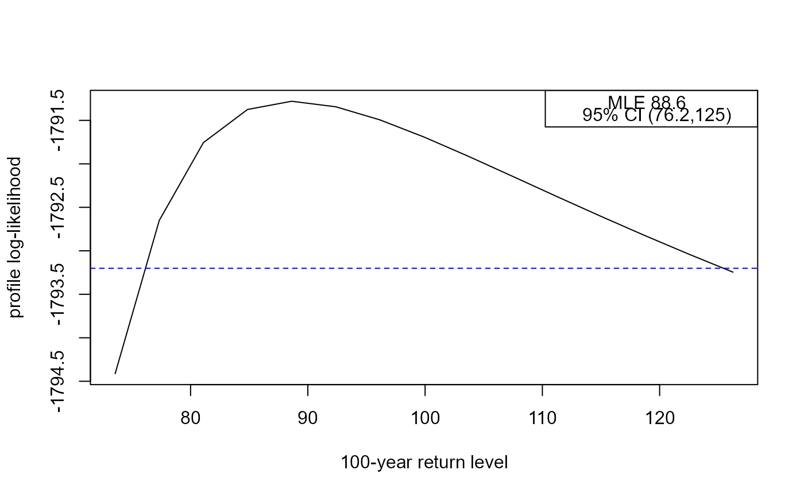
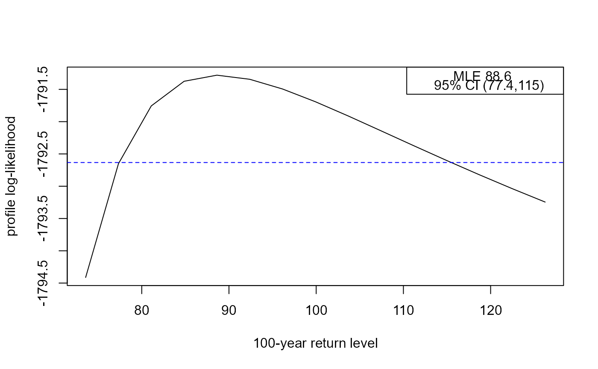

Calculates point estimates and confidence intervals for m-year
return levels for stationary time series fitted extreme value model objects
returned from flite. Two types of interval may be returned:
(a) intervals based on approximate large-sample normality of the maximum
likelihood estimator for return level, which are symmetric about the point
estimate, and (b) profile likelihood-based intervals based on an (adjusted)
log-likelihood.
returnLevel(
x,
m = 100,
level = 0.95,
ny,
prof = TRUE,
inc = NULL,
type = c("vertical", "cholesky", "spectral", "none")
)An object inheriting from class "flite" returned from
flite.
A numeric scalar. The return period, in years.
A numeric scalar in (0, 1). The confidence level required for
confidence interval for the m-year return level.
A numeric scalar. The (mean) number of observations per year. Setting this appropriately is important. See Details.
A logical scalar. Should we calculate intervals based on profile log-likelihood?
A numeric scalar. Only relevant if prof = TRUE. The
increment in return level by which we move upwards and downwards from the
MLE for the return level in the search for the lower and upper confidence
limits. If this is not supplied then inc is set to one hundredth
of the length of the symmetric confidence interval for return level.
A character scalar. The argument type to the function
returned by the function adjust_loglik, that is, the type of
adjustment made to the independence log-likelihood function in creating
an adjusted log-likelihood function. See Details and
Value in adjust_loglik.
A object (a list) of class "returnLevel", "lite" with the
components
Named numeric vectors containing the respective
lower 100level% limit, the MLE and the upper
100level% limit for the return level.
If prof = FALSE then rl_prof will be missing.
Estimated standard error of the return level.
If prof = TRUE then
these components will be present, containing respectively: the maximised
log-likelihood; the critical value and a matrix with return levels in
the first column (ret_levs) and the corresponding values of the
(adjusted) profile log-likelihood (prof_loglik).
The input values of m and level.
The value of ny used to infer the return level.
The call to returnLevel.
For information about return levels see the "Introducing lite" vignette.
ny provides information about the (intended) frequency of
sampling in time, that is, the number of observations that would be
observed in a year if there are no missing values. If the number of
observations may vary between years then ny should be set equal to
the mean number of observations per year.
Supplying ny.
The value of ny may have been set in the call to
flite. If ny is supplied by the user in the call to
returnLevel then this will be used in preference to the value
stored in the fitted model object. If these two values differ then no
warning will be given.
For details of the definition and estimation of return levels see the Inference for return levels vignette.
The profile likelihood-based intervals are calculated by
reparameterising in terms of the m-year return level and estimating
the values at which the (adjusted) profile log-likelihood reaches
the critical value logLik(x) - 0.5 * stats::qchisq(level, 1).
This is achieved by calculating the profile log-likelihood for a sequence
of values of this return level as governed by inc. Once the profile
log-likelihood drops below the critical value the lower and upper limits are
estimated by interpolating linearly between the cases lying either side of
the critical value. The smaller inc the more accurate (but slower)
the calculation will be.
Coles, S. G. (2001) An Introduction to Statistical Modeling of Extreme Values, Springer-Verlag, London. doi: 10.1007/978-1-4471-3675-0_3
returnLevelMethods, including plotting the (adjusted)
profile log-likelihood for a return level.
### Cheeseboro wind gusts
# Make inferences
cdata <- exdex::cheeseboro
# Each column of the matrix cdata corresponds to data from a different year
# flite() sets cluster automatically to correspond to column (year)
cfit <- flite(cdata, u = 45, k = 3)
# These data are hourly for one month (January) year so ny = 31 * 24
# Large inc set here for speed, sacrificing accuracy
# Default 95% confidence intervals
rl <- returnLevel(cfit, inc = 2.5, ny = 31 * 24)
summary(rl)
#>
#> Call:
#> returnLevel(x = cfit, ny = 31 * 24, inc = 2.5)
#>
#> Estimate Std. Error
#> m = 100 90.72766 10.39134
rl
#>
#> Call:
#> returnLevel(x = cfit, ny = 31 * 24, inc = 2.5)
#>
#> MLE and 95% confidence limits for the 100-year return level
#>
#> Normal interval:
#> lower mle upper
#> 70.36 90.73 111.09
#> Profile likelihood-based interval:
#> lower mle upper
#> 77.41 90.73 132.59
oldrl <- plot(rl)

oldrl
#> lower mle upper
#> 77.40789 90.72766 132.59250
# Quickly recalculate/replot the intervals based on profile log-likelihood
# provided that level is smaller than that used to produce rl
newrl <- plot(rl, level = 0.9)

newrl
#> lower mle upper
#> 78.93789 90.72766 120.95866